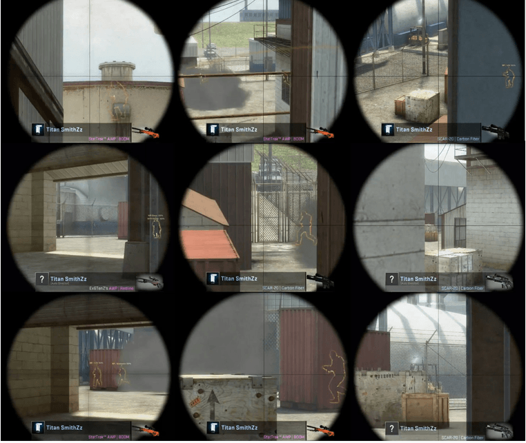

Как играть с AWP в CS:GO. Обучение от TITAN
18 авг 2015 | 31 5В рамках этой статьи мы рассмотрим как играть со снайперской винтовкой AWP. Так как разные игровые ситуации требуют различного выбора оружия, также упомянем SSG 08 (Scout) и SCAR-20.
Вся игра в CS Global Offensive зависит от уровня вашей стрельбы, на этом строится основа всех команд. Нет никаких других способов достижения топ результатов без талантливых эймеров.
Многие команды, достигшие большого успеха за счет хорошей стрельбы из АК-47 или M4, играют без отдельно назначенного снайпера, они считают игру опытного снайпера не необходимостью, а лишь дополнением, так сказать, бонусом. Это неправильная стратегия.
Снайпер может использоваться по-разному, в зависимости от ситуации, расположения команды и карты. Иногда перед снайпером ставится задача удерживать определенную точку, или угол, в делая атакующего противника легкой добычей. В других случаях снайпер будет использоваться, чтобы открыть раунд, сделать входящий, быстрый фраг или же заставить противника занять оборонительные позиции.
Общей истиной для всех истинных снайперов является то, что они играют со снайперской винтовкой так часто, как могут. Как правило, назначенный снайпер в команде покупает AWP в третьем-четвертом раунде, и продолжит покупать её так часто, как позволяют деньги.
Тем не менее, в Global Offensive становится всё меньше и меньше профессиональных снайперов, вместо этого появляются ситуации, когда AWP покупают в отдельных раундах, используя эту винтовку лишь в определенных местах, на некоторых картах. Любимым оружием таких игроков всё равно, остаётся АК-47 или M4. В этой статье мы обсудим оба случая, но сначала:
Беглый взгляд на финансовую сторону вопроса
AWP:
Винтовка стоит 4750$, при этом награда за убийство составляет всего лишь 100$. Эти два минуса компенсирует убойная сила оружия, способного убить противника с одной пули (за исключением попадания в ногу), а также быстрое прицеливание, и высокая точность попаданий при двух-кратном приближении.
SSG 08:
Винтовка очень дешевая, её цена составляет всего лишь 2000$, со стандартным бонусом за убийство противника 300$. Выстрел в голову, шею и живот оказывается смертельным для игрока без брони. Бронированных игроков можно убить с одного выстрела только попаданием в голову.
SCAR-20:
Винтовка доступна лишь контр-террористам, и стоит даже больше чем awp - 5000$, но в свою очередь, предполагает награду в 300$ за фраг. Смертельными выстрелами из этой винтовки являются лишь попадания в голову. SCAR-20 благодаря своей высокой скорострельности, часто используется как "бомбардировщик", способный нанести большой урон вражеской толпе, и даже остановить атаку противника.
«Можно легко разделить игру снайпера на две полярных категории: агрессивная и оборонительная».
Оборонительная игра с awp сводится к занятию позиции, ожидания появления противника, выстрелу и быстрому отходу назад. В то время, как агрессивная игра снайпера подразумевает наступательные действия, рассчитанные на хорошую реакцию и точность стрельбы, а также, более активное ввязывание в драку.
Рассмотрим такую технику игры снайпером на примере карты de_nuke
Для оборонительного снайпера de_nuke предусматривает ряд выгодных позиций, из которых можно сделать выстрел, большинство которых находится в ангаре или на мостике возле 9-ки.
Для этой статьи была сделана композитная картинка с наиболее распространенными позициями SmithZz на карте de_nuke за время матчей Titan – iBuyPower в финале ESEA и Titan - NiP на турнире DreamHack Stockholm CS:GO Invitational.
Позиционирование такого стиля строится таким образом, чтобы враг был вынужден пройти через его прицел. Чтобы застать противника в движении, и не попасться под ответный огонь, нужно находиться в закрытом угле для противника, как бы немного пропустить его вперед, как показано в большинстве случаев на картинке.
Также существует два способа размещения прицела. Первый - чуть впереди траектории появления предполагаемого противника, чтобы успеть среагировать. Второй вариант - разместить прицел вначале ожидаемой траектории, отличный метод борьбы со стрейфами, или снайпером противника.
Как показано выше, SmithZz использует оба метода прицеливания, вначале использует прицеливание по первому способу, и терпеливо выжидает, затем переводит прицел вплотную, как можно ближе к месту появления противника.
Очевидно, что недостатком оборонительной стратегии является некоторая степень предсказуемости. Углы и позиции, предпочтительные для оборонительного снайпера хорошо известны большинству команд, а хорошие заброски дыма и других гранат могут в значительной степени нивелировать преимущество мощности снайперской винтовки.
Вам также могут понравиться эти материалы

История изменений карты de_dust2
12.08.15 31 5
История изменений карты de_dust2
12.08.15 31 5